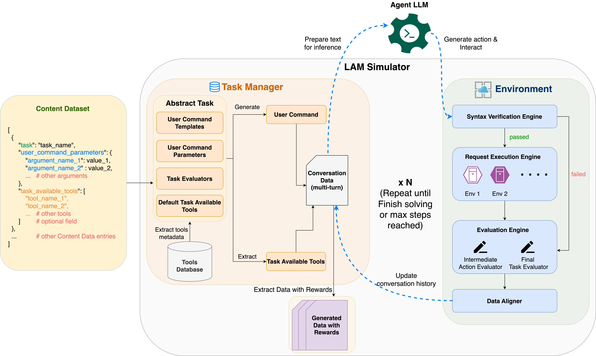
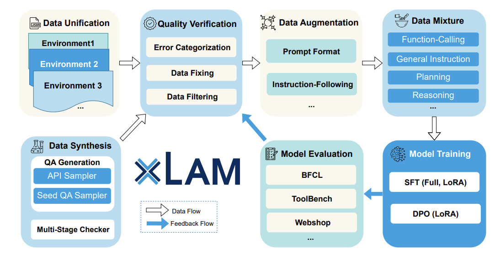

|
Shirley Kokane I am currently working at Salesforce AI Research on the Operational Data Intelligence team. Prior to Salesforce Research, I worked at Subtle Medical and Optum Research. I hold an M.Sc in Computational Biology from Carnegie Mellon University where I was advised by Prof. Min Xu. I am also a member of the Corporate Startup Lab Fellowship program. |
{kind=link}
ResearchMy research interests lie in the intersection of Machine Learning and Reinforcement Learning. I am particularly interested in the application of RL to real-world problems, such as robotics, autonomous systems, and decision-making under uncertainty. I have worked on Foundation Models, Large Language Models (LLM), and CLIP. I am also interested in the development of algorithms that can learn from limited data and generalize to new tasks. |
|  |
LAM SIMULATOR: Advancing Data Generation for Large Action Model Training via Online Exploration and Trajectory Feedback
Thai Hoang, Shirley Kokane, et al. Association for Computational Linguistics (ACL) Findings, 2025 arXiv |
|
|
ToolScan: A Benchmark For Characterizing Errors In Tool-Use LLMs
Shirley Kokane, et al. Building Trust in LLMs and LLM Applications Workshop at ICLR, 2025 OpenReview |

|
APIGen: Automated Pipeline for Generating Verifiable and Diverse Function-Calling Datasets
Zuxin Liu, Thai Hoang, Jianguo Zhang, Ming Zhu, Tian Lan, Shirley Kokane, Huan Wang, Shelby Heinecke, Caiming Xiong Advances in Neural Information Processing Systems (NeurIPS), 2024 Paper / Project Page |
|  |
xLAM: A Family of Large Action Models to Empower AI Agent Systems
Jianguo Zhang∗, Tian Lan∗, Ming Zhu∗, Zuxin Liu∗, Thai Hoang∗, Shirley Kokane†, Weiran Yao†, Shelby Heinecke, Huan Wang‡, Caiming Xiong‡ North American Chapter of the Association for Computational Linguistics (NAACL), 2025 arXiv / Models / Github |

|
Improving Knowledge Distillation in Transfer Learning with Layer-wise Learning Rates
Shirley Kokane, Mostofa Rafid Uddin, Min Xu AAAI Workshop, 2024 arXiv |
Employment |
|
Salesforce AI Research Jan 2024 - Present |
Machine Learning Researcher Developed and deployed a multi-modal LLM pipeline for analyzing customer feedback and improving product features. |
|
Subtle Medical Jan 2023 - Jan 2024 |
Machine Learning Engineer Engineered inference optimization with Iterable Data loaders and parallelization techniques, accomplished a 50% reduction in time. Finetuned CLIP models for multi-class classification of MRI images. Implemented contrast-enhancement Image encoder-decoder models for faster acquisition of images with maintained resolution. |
|
Optum Research May 2022 - Aug 2022 |
Machine Learning Researcher [Intern] Developed CNN-LSTM models with saliency maps for remote patient monitoring. Integrated the pipeline into a real-time web-based interface using JavaScript, socket programming, Node.js, D3.js, and MongoDB for vital patterns monitoring. |
|
Zimmer & Peacock May 2020 - Aug 2021 |
Machine Learning Software Engineer Executed ML pipelines on Time-series Glucose Forecasting Data. Validated model performance across ARIMA, ETS, and ML algorithms. Implemented feature engineering and extraction using symfit, SKLearn and Discriminant Analysis over COVID Sensor Data. |
Education |
|
Carnegie Mellon University Aug 2021 - Dec 2022 |
M.Sc in Computational Biology Advisors: Prof. Min Xu |
Miscellaneous |
| Conference Reviewer: ICML 2024, ICLR 2024, NeurIPS 2023, ICAPS 2023, ICAPS 2022 |
|
Template inspired by: Jon Barron |